Data Visualization, Dashboards, Benchmarking, and Performance Monitoring
Opening scenario
In January 2026, the Riverbend clinics’ leadership team reviews two years of appointment data and asks for a monthly dashboard. The request has a history. In October 2024, a monthly report showed the network no-show rate climbing from 15.6 percent in July to 17.8 percent in August and 18.4 percent in September. The covering email was titled “No-show crisis,” and an emergency plan was drafted within a week.
At the same review, the urgent care manager reports that her clinics are “doing great”: their two-year no-show rate of 11.2 percent is well below the network’s 14 percent target.
Both statements rest on numbers read without context. The first treats a two-month climb as a trend. The second treats a rate below target as proof that nothing needs attention.
Evaluating either claim requires two years of history on one chart, a
rule for deciding when movement exceeds what chance would produce, and a
comparable reference point. This chapter develops each of these tools.
The data come from the book’s teaching files: the DS prefix
numbers the operational datasets (DS2 holds the clinic
appointments and DS3 the emergency department visits), and
the PH prefix numbers the public health datasets. Table 1
shows the three months behind the 2024 email; the walkthrough tests both
claims.
| Month | Kept or missed | No-shows | No-show rate |
|---|---|---|---|
| July 2024 | 1,306 | 204 | 15.6% |
| August 2024 | 1,303 | 232 | 17.8% |
| September 2024 | 1,276 | 235 | 18.4% |
By the end of this chapter, you will be able to:
- Choose a chart that matches the question and the type of data, extending the Chapter 6 chart chooser to composition, relationship, and hierarchy.
- Apply design choices that make a chart accurate and quick to interpret: a zero baseline for bars, sorted order, direct labels, purposeful color, and a title that states the finding.
- Build a run chart with a median center line and apply the shift, trend, and runs rules to separate a signal from ordinary variation.
- Distinguish a run chart from a control chart and say when each one is the appropriate tool.
- Choose a comparable benchmark, such as past performance, a target, or a matched peer group, and judge where a value sits against it.
- Design and build an interactive Excel dashboard with a key performance indicator (KPI) card, a run chart, a sparkline, a breakdown chart, and a slicer.
Key concepts
A chart presents evidence through position, length, and color rather than words. It is effective when it answers one question accurately and efficiently. This section builds that skill in five parts:
- choosing the chart from the question and the type of data,
- designing the chart so it represents the data accurately and can be read quickly,
- monitoring a measure over time with a run chart and its rules,
- benchmarking a value against a comparable reference,
- assembling a few views into a dashboard that supports a decision.
Choose the chart from the question and the data
Chapter 6 introduced one principle for charts: the chart type follows the question. It paired three questions with three charts. A column or bar chart compares a value across categories, a line chart tracks a value over time, and a histogram shows how one measure is distributed. Chapter 6 also previewed other chart families and noted that this chapter develops them.
Data visualization is the practice of encoding data as visual marks, such as bar lengths, point positions, and colors, so a reader can identify patterns that may be less apparent in a table of numbers. Choosing an appropriate encoding takes two questions, asked in order:
- What question does the reader need answered? Comparison, change over time, distribution, composition, relationship, or hierarchy.
- What type of data answers it? Recall from Chapter 4 that a qualitative variable holds categories and a quantitative variable holds numbers. Time order is a third ingredient: monthly rates are numbers arranged in sequence.
Each chart family in this section appears as a reference card. A card states when to choose the chart, which data to select, how to read the result, and one design check. The cards use illustrative values rather than the teaching data, so their numbers differ from the rates calculated elsewhere in this chapter.
The three core charts, revisited. Figure 1 is the chooser from Chapter 6. It matches three questions to three charts, and the next three cards take each one further.
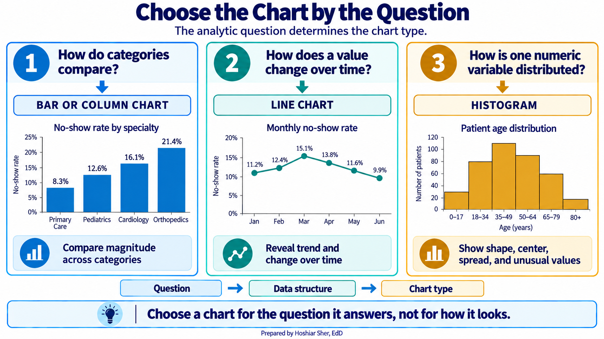
- Bar and column charts compare one measure across categories (Figure 2). Every bar starts from a common zero, so length carries the value. Sort the bars by value, and turn them horizontal when the category labels are long.
- Line charts track a measure over time (Figure 3). Keep the spacing between periods accurate and show gaps where data are missing. A line shows a pattern, not its cause; the run chart later in this chapter adds a rule for deciding when a pattern is more than chance.
- Histograms show how one numeric measure is spread (Figure 4), as Chapter 9 built for length of stay. Each bar counts the values in one interval, or bin. Try a second bin width to confirm that the main pattern does not depend on the one you chose.
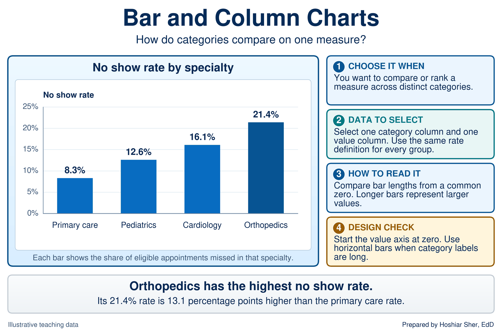
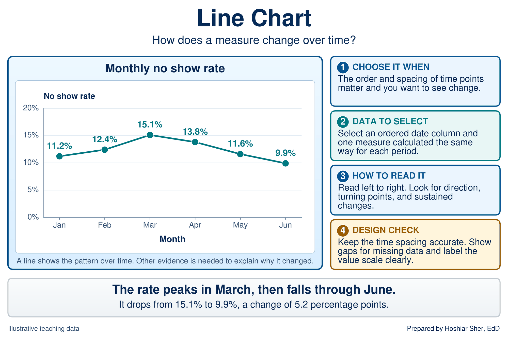
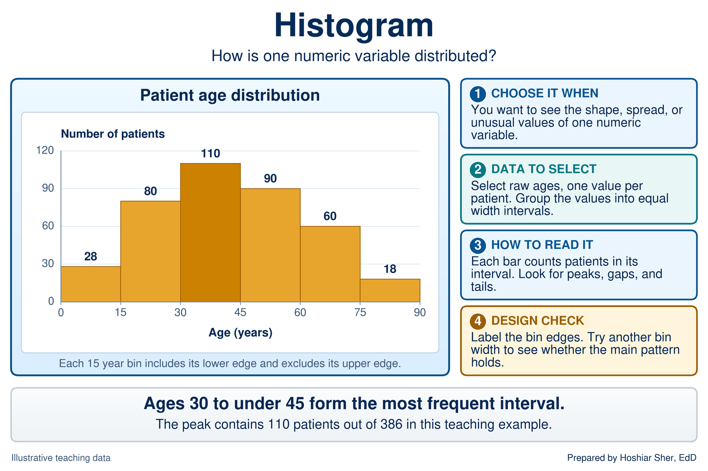
Composition and distribution by group. Chapter 6 previewed two more families in Figure 5: charts that show how a whole divides into parts, and the box plot.
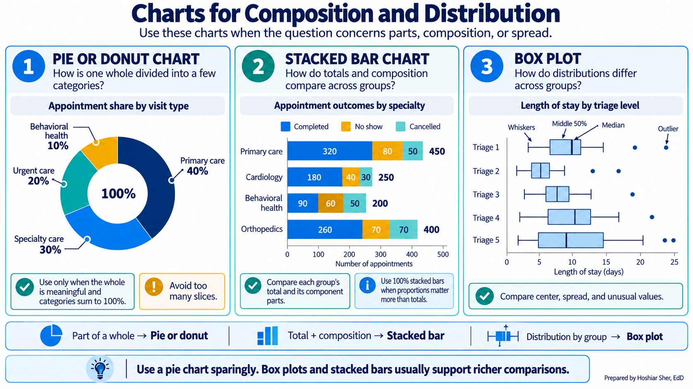
- Pie and donut charts divide one whole into a few parts (Figure 6). A donut chart is a pie with its center removed, often to display the total. Both encode shares as angles, so they work only when the parts are few and substantially different, for reasons explained after the chooser table.
- Stacked bar charts show group totals and the parts inside each total (Figure 7). In a 100% stacked bar chart, every bar is scaled to 100 percent, so the segments compare shares rather than counts. The card’s point depends on that distinction: behavioral health has fewer missed visits than primary care (60 against 80) but a higher missed share (30 percent against 18 percent).
- Box plots, which Chapters 8 and 9 introduced, compare the center and spread of one measure across groups (Figure 8). Read the medians first, then the box widths, then the whiskers and any points beyond them.
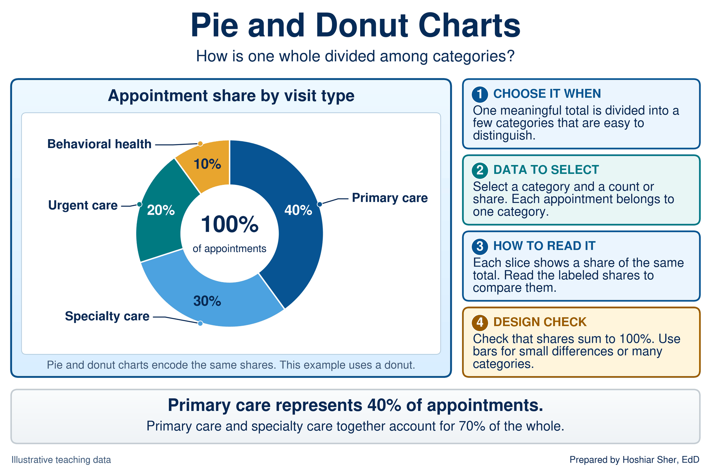
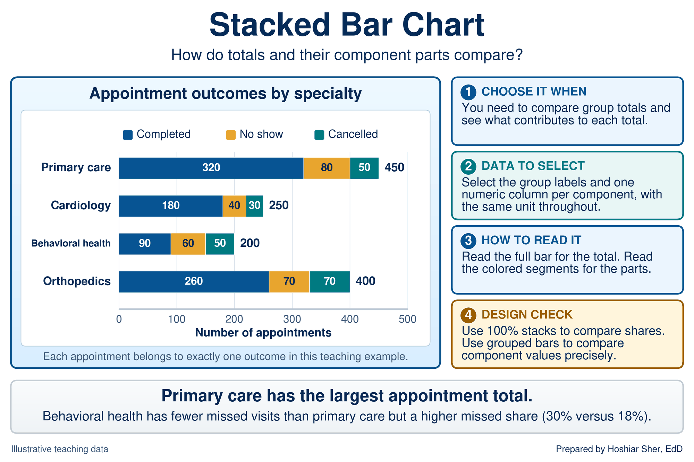
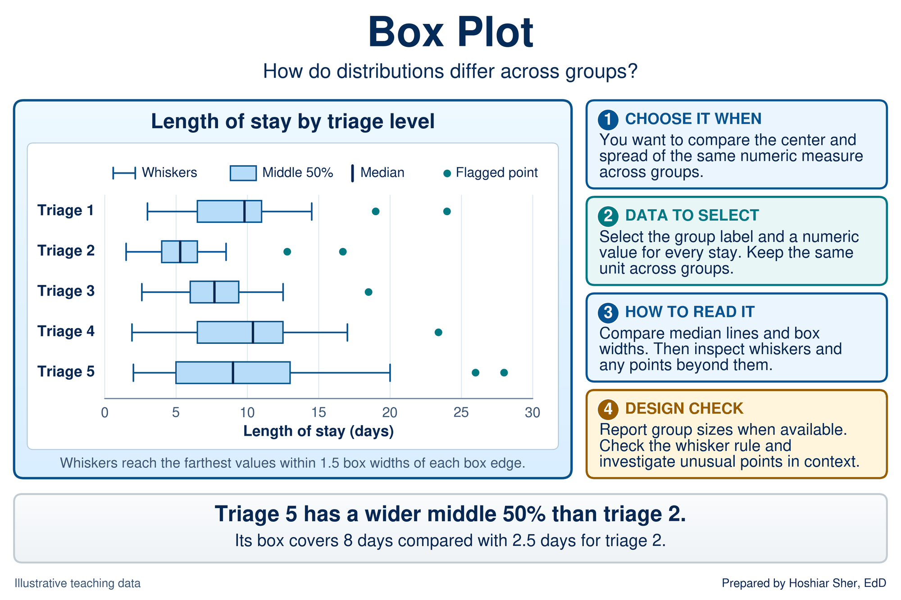
Relationships and hierarchies. The last two families, previewed in Figure 9, show how two numbers move together and how categories nest inside one another.
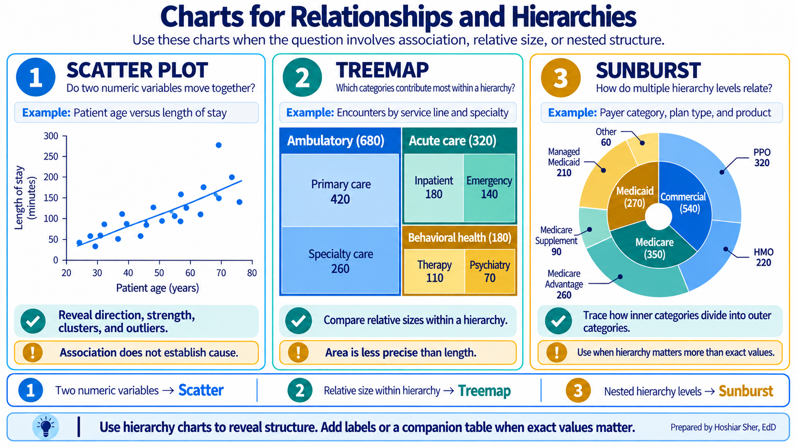
- Scatterplots place one point per case on two numeric axes (Figure 10). Chapter 10 summarized such a cloud with a correlation coefficient, and Chapter 12 builds on this chart when it fits a line through the cloud. Look for direction, form, clusters, and points far from the pattern, and remember that an association alone does not establish a cause.
- Treemaps draw each category as a rectangle whose area is proportional to its count, nested inside its parent category (Figure 11). They show the overall structure at a glance, but readers judge areas poorly, so use a sorted bar chart when an exact comparison matters.
- Sunburst charts show the same kind of hierarchy as rings (Figure 12). A sunburst chart places the top level in the inner ring and splits each segment outward into its parts. Keep the rings few, and use a table when readers need exact values.
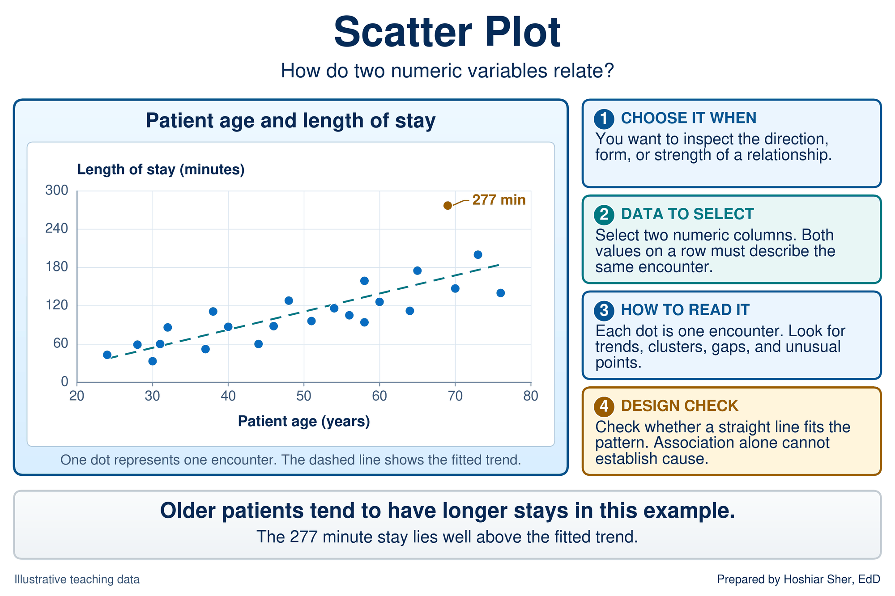
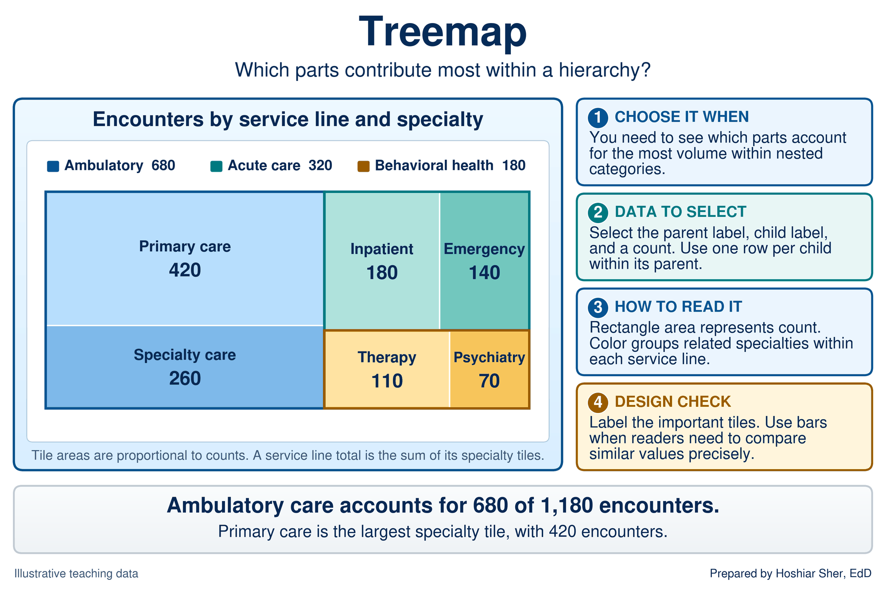
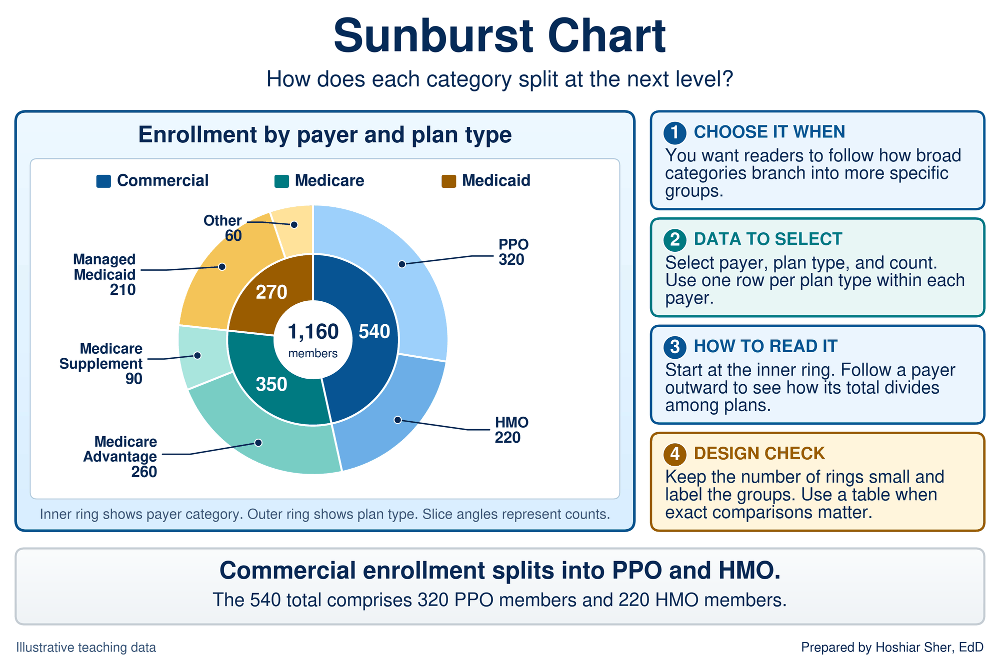
Table 2 gathers the families into one chooser that extends Chapter 6’s from three questions to six. The first three rows restate Chapter 6; the last three are new.
| Question | Data you have | Default chart | Excel command | Avoid |
|---|---|---|---|---|
| Compare categories | One number per category | Sorted bar or column | Insert > Bar | Pie with many slices; 3-D bars |
| Change over time | Numbers in time order | Line; run chart for monitoring | Insert > Line | Unsorted dates; a bar for each of many periods |
| Distribution | Many values of one measure | Histogram; box plot for groups | Insert > Insert Statistic Chart | A single average standing in for the spread |
| Composition | Parts that sum to a whole | 100% stacked bar; pie or donut for a few parts | Insert > Bar > 100% Stacked Bar | Pie with more than about five parts |
| Relationship | Pairs of numbers | Scatterplot | Insert > Scatter | A line that joins unordered points |
| Hierarchy | Categories nested in categories | Treemap or sunburst | Insert > Insert Hierarchy Chart | Treemap when exact comparison matters |
Graphical perception research has measured how accurately people read different visual encodings, and it explains why the chooser prefers bars to pies. Readers judge position along a common scale most accurately; length, direction, and angle come next; area is less accurate; and volume and color saturation are least accurate (Cleveland & McGill, 1984). In their experiments, readers compared values less accurately as angles in a pie than as positions in a bar chart. A bar chart encodes values as positions and lengths; a pie chart encodes them as angles and areas.
Figure 13 tests the claim on eight specialty shares. In the pie, Cardiology (5.1 percent) and Orthopedics (4.1 percent) are difficult to rank. In the sorted bar chart, the order and the differences can be read immediately. A pie chart remains suitable when it has only a few parts and the message is a simple part-to-whole split, such as “two-thirds of appointments are primary care” (Wilke, 2019).
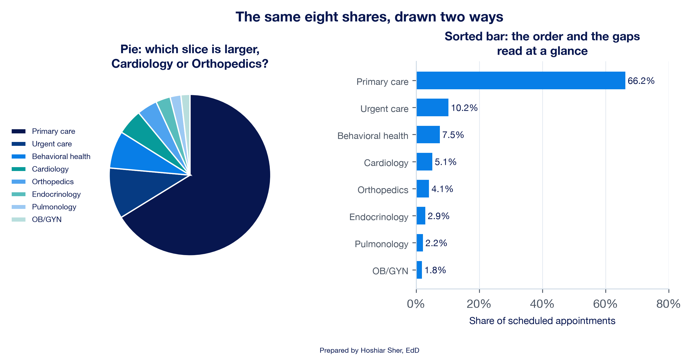
Two common design choices can mislead readers. 3-D effects tilt bars and pies so that the nearer parts look larger than they are. Dual-axis charts plot two measures against two different vertical scales, and the analyst’s choice of scales decides whether the lines appear to move together. Use flat charts, and put two measures on two aligned charts rather than on one chart with two axes.
Design the chart for accuracy and clarity
Selecting an appropriate chart type is the first requirement. The second is design: the choices that determine whether, and how quickly, a reader identifies the finding. The principles below come from long-standing visualization practice (Knaflic, 2015; Tufte, 2001; Wilke, 2019).
- Start bars at zero. A bar encodes its value as length, so a bar axis that starts above zero misstates the ratio between bars. A line chart encodes values as positions, so its axis may start above zero to show movement, provided the reader can see where it starts.
- Sort by value. Order categories from largest to smallest unless they have a natural order, such as months or age groups. Alphabetical order obscures the ranking.
- Remove what does not carry data. Tufte (2001) called the ink that encodes data data-ink and the decoration around it chartjunk. Heavy gridlines, borders, shadows, and legends that repeat the axis labels compete with the data.
- Label directly. Put values and series names next to the marks they describe, so the reader does not have to look back and forth between a legend and the chart.
- Write a title that states the finding. “No-show rate by specialty” names the topic; “Behavioral health has the highest no-show rate” states the finding for the reader (Knaflic, 2015).
- Use color with a purpose. Use one neutral color for most marks and one highlight color for the point that matters. Choose a palette that readers with color vision deficiency can distinguish (Okabe & Ito, 2008), and never let color be the only carrier of meaning. The Web Content Accessibility Guidelines (WCAG) treat color-only meaning as an accessibility failure (World Wide Web Consortium [W3C], 2023).
- Say what is measured. The caption or a note states the measure’s numerator and denominator, the period, and the number of cases, the same standard every figure in this book follows.
Figure 14 shows why the first rule matters. Primary care’s no-show rate is 16.4 percent and behavioral health’s is 18.5 percent, so the second bar should be about 1.13 times as long as the first. On an axis that starts at 15 percent, it looks about 2.5 times as long.
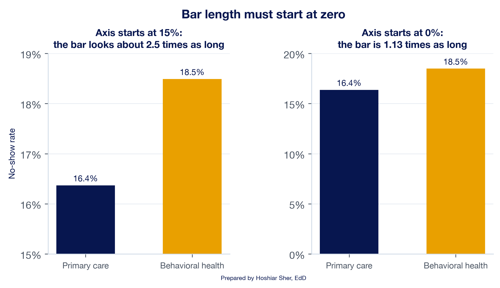
Figure 15 applies all seven principles at once. The left panel is a chart produced with common spreadsheet defaults and a few decorative choices. The right panel presents the same eight numbers.
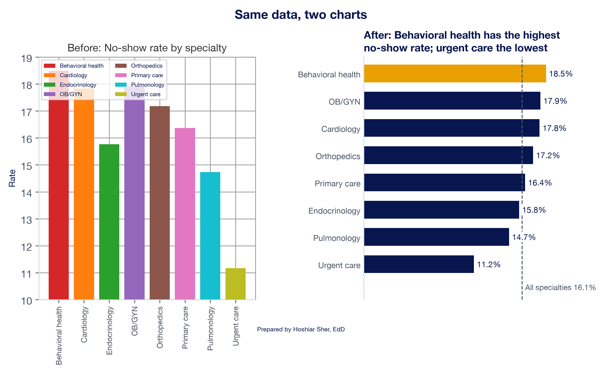
Before you share a chart, ask two questions: does the chart type answer the reader’s question, and would a reader with limited time identify the finding within a few seconds? If either answer is no, revise the chart before refining other details.
Run charts: reading a measure over time
Chapter 10 separated two kinds of variation. Common-cause variation is the ordinary movement of a stable process; special-cause variation signals that something in the process has likely changed. Chapter 10’s monthly no-show chart drew a band three standard errors either side of the 24-month rate and found every month inside it. It also noted that a band alone can miss a sustained shift that stays inside the limits. A run chart addresses that limitation.
A run chart plots a measure in time order with the median of the plotted values as its center line and no calculated limits. A run is a sequence of one or more consecutive points on the same side of the median. Points that fall exactly on the median are not useful observations: they neither add to a run nor break it.
The median is a deliberate choice. It divides the ordered observations into two halves, and observations equal to the median are left out when counting runs, so when only random variation is at work the points should cross it often and in no particular pattern. A pattern that chance would rarely produce is a signal: a nonrandom pattern worth investigating. The language of common-cause and special-cause variation, and of a stable process, belongs to the control chart; a run chart reports random variation or a nonrandom signal (Perla et al., 2011). Four rules for reading a run chart are standard in healthcare improvement (Perla et al., 2011), and Figure 16 illustrates each one.
- Shift. Six or more consecutive points all above or all below the median. Skip points that fall on the median; they neither add to the shift nor break it.
- Trend. Five or more consecutive points all going up or all going down. When two or more consecutive points have the same value, count only the first; like values neither make nor break a trend.
- Too few or too many runs. Count the runs and compare the count with a table of limits. For 24 useful observations, fewer than 8 runs or more than 18 is a signal. Too few runs means the process stays on one side for long stretches; too many means it alternates more regularly than chance would.
- Astronomical point. A point so different from the rest that any reader of the chart would agree it is unusual. Every chart has a highest and a lowest point; an astronomical point lies far outside the range of the other points.
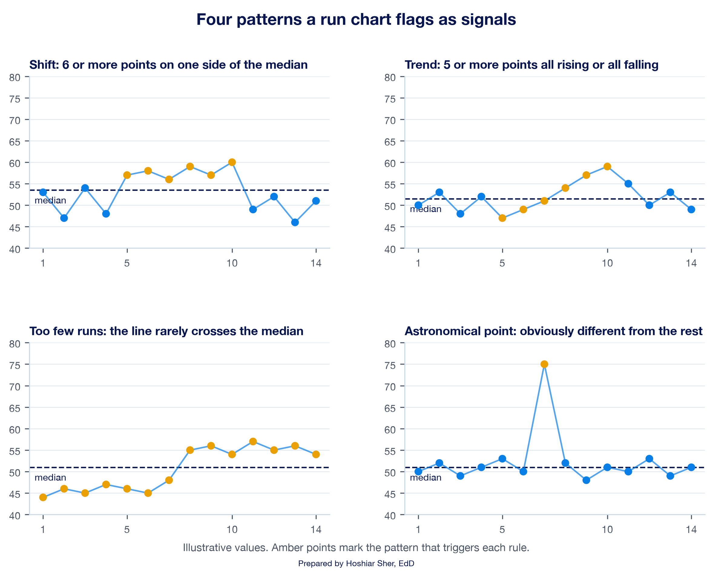
Table 3 gives the limits for 10 to 24 useful observations, which covers every series in this chapter. The full table in Perla et al. (2011) continues to 60 points; with fewer than 10 useful observations, the runs rule should not be applied.
| Useful observations | Too few runs if fewer than | Too many runs if more than |
|---|---|---|
| 10 | 3 | 9 |
| 11 | 3 | 10 |
| 12 | 3 | 11 |
| 13 | 4 | 11 |
| 14 | 4 | 12 |
| 15 | 5 | 12 |
| 16 | 5 | 13 |
| 17 | 5 | 13 |
| 18 | 6 | 14 |
| 19 | 6 | 15 |
| 20 | 6 | 16 |
| 21 | 7 | 16 |
| 22 | 7 | 17 |
| 23 | 7 | 17 |
| 24 | 8 | 18 |
Apply the rules to the network series from the opening scenario. Figure 17 plots the 24 monthly no-show rates with their median of 16.0 percent.
- Shift: the longest run is 5 months, March to July 2024, all below the median. A shift needs 6.
- Trend: the longest sequence moving in one direction is 4 points. A trend needs 5.
- Runs: the series makes 11 runs, within the limits of 8 to 18.
- Astronomical point: none. September 2024, the highest month at 18.4 percent, is the series maximum, which by itself does not indicate an unusual pattern.
No rule fires. None of the selected run-chart rules identifies a nonrandom pattern, and the August and September climb that prompted the email, two consecutive points above the median, does not on its own establish a sustained change. Continued monitoring is appropriate. A run chart cannot by itself show that a process is stable; that judgment needs a control chart, which the next subsection introduces.
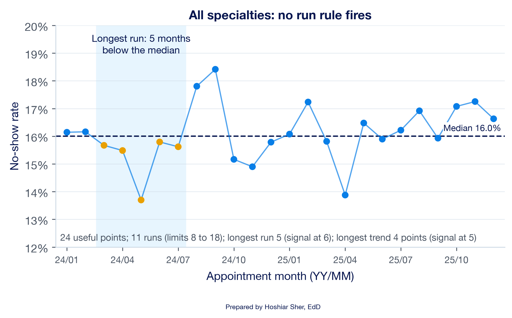
Every rule you add, and every subgroup you check, adds chances of a false alarm. Anhøj and Olesen (2014) showed by simulation that run-chart rule sets differ in how often they flag a stable process. The same arithmetic applies across subgroups: when the walkthrough splits the network into its eight specialties, five of the eight series trigger at least one rule. Some of those signals are real changes and some are chance. Their simulations also found the trend rule “virtually useless” for detecting gradual drift, while the shift and crossings rules kept false signals near 5 percent (Anhøj & Olesen, 2014), and some practitioners therefore omit the trend rule. Treat a trend that only just meets the rule with caution: two of the five specialty signals, cardiology and primary care, rest only on a five-point trend. Agree on one rule set before you look at the data, and treat a signal as a reason to investigate, not as proof of a cause.
Run chart or control chart?
A control chart adds calculated limits to a time-ordered chart, usually three standard errors either side of the center line, to mark the range that common-cause variation produces. Chapter 10 defined the p-chart, the control chart for a rate, in which each month gets its own limits from its own count (Mohammed et al., 2008). Both charts look for special causes; they differ in what they assume and what they can detect. Table 4 compares them.
| Feature | Run chart | Control chart (p-chart for a rate) |
|---|---|---|
| Center line | Median of the plotted points | Mean, such as the overall rate |
| Limits | None | Calculated, usually 3 standard errors from the center |
| Signals | Shift, trend, runs, astronomical point | A point outside the limits, plus run-type rules |
| Assumptions | Minimal: time order and a median | A model of the data, such as a model for counts of yes-or-no outcomes |
| Best use | Learning whether a change is happening, early in an improvement effort | Monitoring a stable process and judging single unusual points |
In practice, many teams begin with a run chart, which needs only a median and a count, and move to a control chart once the process is stable and the data are plentiful (Provost & Murray, 2022). The dashboard in this chapter uses a run chart; Chapter 10’s monthly chart showed what the limits of a control chart add.
Benchmarking: select an appropriate comparison
A no-show rate of 16.6 percent has limited meaning in isolation. A benchmark is a reference point that gives a value meaning by answering “compared with what?” Table 5 names the three kinds.
| Benchmark | Question it answers | Healthcare example | Common pitfall |
|---|---|---|---|
| Baseline (your own past) | Are we changing? | This month’s rate against the 24-month median | A baseline that already contains the change |
| Target (a goal set in advance) | Are we where we intend to be? | The network’s 14 percent no-show target | A target set after seeing the data |
| Peer group (similar units) | How do we compare with others like us? | One county’s rate against counties in its region | Peers that differ in definition, population, or case mix |
Chapter 2 gave five checks that decide whether an external benchmark is comparable: the same definition, population, time period, geography, and unit. Chapter 10 added a sixth consideration: a rate is an estimate with uncertainty, so a small gap between two rates may be chance. Benchmarking adds one more consideration: the choice of peer group. That choice can change the conclusion.
The county file illustrates this.
datasets/PH1_places_county_wide.csv is a synthetic teaching
file modeled on the PLACES (Population Level Analysis and Community
Estimates) program of the Centers for Disease Control and Prevention
(CDC), which publishes model-based estimates of health measures for
every U.S. county. Real PLACES estimates come from survey data combined
with census population data through a statistical model, and each
estimate carries a 95 percent confidence interval (CDC, 2025). The
teaching file keeps real county names but not real values, so its
numbers illustrate the method, not the counties.
In the file, Chicot County, Arkansas, has a diagnosed diabetes rate of 17.2 percent. Figure 18 places that value against two peer groups. Against the 3,143 counties in the teaching file it is higher than 82 percent of them, in the top fifth. Against the 1,423 counties the file assigns to the South region, where the median is 15.2 percent rather than 13.7 percent, it is higher than 72 percent: still above the middle, but less extreme. Both comparisons are valid. The national comparison answers “how does this county rank in the country?” The regional comparison answers “how does it rank among counties that share its regional pattern?”
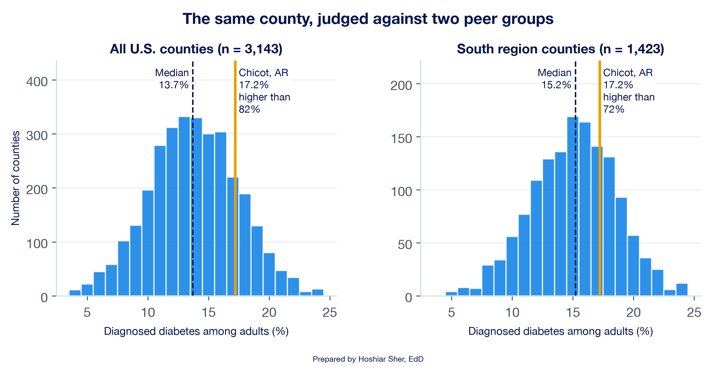
The share of peers below a value is the value’s percentile
rank. You can calculate it in Excel with COUNTIF
and COUNTIFS, the counting functions from Chapters 6 and
8.
With the county file in a Table named Places, the share
of all counties below 17.2 percent is
=COUNTIF(Places[diagnosed_diabetes_pct], "<"&17.2) / COUNT(Places[diagnosed_diabetes_pct])
which returns 0.823 (2,588 of 3,143 counties). The share of
South-region counties below it adds a condition for the region in the
numerator and the denominator:
=COUNTIFS(Places[region], "South", Places[diagnosed_diabetes_pct], "<"&17.2) / COUNTIFS(Places[region], "South")
which returns 0.720 (1,024 of 1,423). The
"<"&17.2 pattern joins the operator to the number,
as the outlier counts in Chapter 8 did.
A peer group that differs in case mix, the kinds of patients and visits a unit serves, produces a misleading comparison. In the appointment data, the two urgent care clinics have no-show rates near 11 percent, well below the network’s 16.1 percent. Urgent care also books differently: its median lead time is 1 day, against 15 to 22 days in the other specialties, and 31 percent of its appointments are same-day. Patients booked for the next day have less time to forget an appointment or change plans, which is one plausible reason for the gap. A comparison between a primary care clinic and an urgent care clinic therefore reflects differences between the services more than differences in how well either clinic is managed.
Dashboards: decision-focused monitoring
Chapter 6 built a scorecard: a one-page summary of a few numbers, each beside a target or a comparison. A dashboard extends the scorecard over time and adds interaction. Few (2013) describes a dashboard as a single screen that shows the few measures a reader needs to monitor progress toward a goal, arranged so their status can be read at a glance. Its purpose is to support a decision, not to display everything that can be counted.
Figure 19 labels the parts of the dashboard you build in the walkthrough.
- A key performance indicator (KPI) is a measure chosen because it tracks progress toward a goal. On a dashboard each KPI appears on a KPI card: the current value, its benchmark, and a status.
- A trend view, here a run chart, shows whether the KPI is changing.
- A sparkline is a small line chart that fits inside one worksheet cell and shows a trend beside a number (Microsoft, n.d.-d).
- A breakdown splits the KPI by one dimension, such as weekday, to show where to look next.
- A slicer is a set of filter buttons, introduced in Chapter 9, that filters one or more PivotTables at once (Microsoft, n.d.-c).
- Definitions and an as-of date state exactly what is counted and when the data were drawn.
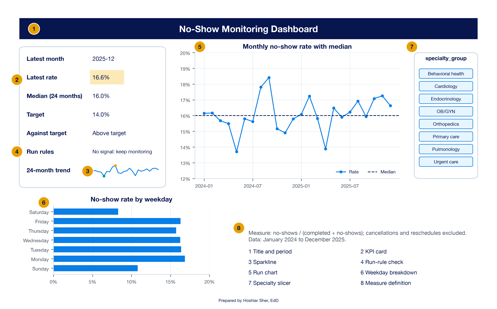
A dashboard is judged by the decisions it supports. Four design rules follow from that purpose:
- Each KPI has a definition, a benchmark, an owner, and an action. If no one would act when a number changes, the number should not appear on the dashboard.
- Fit one screen. Put the most important KPI at the upper left, where readers look first, and keep related charts on matching scales.
- Flag signals, not every change. A color that turns red whenever a number rises leads readers to disregard it, because most rises reflect random variation. Tie each alert to a rule, such as a run-chart signal or a target, and say which rule it uses.
- Show definitions and the period. A reader who opens the dashboard alone must know what is counted.
Five Excel techniques appear in the walkthrough for the first time. Each is short, and each reads from cells you build in the walkthrough.
- Referencing a PivotTable cell. When you click a
PivotTable cell while typing a formula, Excel writes a
GETPIVOTDATAformula instead of a plain reference. Type the address instead (for example=B4), so the reference fills down like any other. - Run-rule helper columns. Six short formulas apply
the rules exactly as stated, including the two special cases: a point on
the median neither adds to a run nor breaks it, and a repeated value
neither makes nor breaks a trend.
=IF(E4>F4, "Above", IF(E4<F4, "Below", "On"))labels each month’s side of the median.
=IF(G5="On", H4, G5)carries the last useful side forward, so a point on the median is skipped.
=IF(G5="On", I4, IF(H5=H4, I4+1, 1))adds one to the run while the side stays the same, restarts at 1 when it changes, and holds its count on a median point.
=IF(E5>E4, "Up", IF(E5<E4, "Down", J4))records the direction of each move and repeats the previous direction when two values are equal.
=IF(E5=E4, K4, IF(J5=J4, K4+1, 1))counts consecutive moves in one direction and holds its count on a tie.
=IF(N4=0, 0, SUMPRODUCT((H5:H27<>H4:H26)*(H4:H26<>""))+1)counts the runs by counting the changes of useful side and adding 1; multiplying by(H4:H26<>"")ignores any months before the first useful side, and theIFreturns 0 runs when no point is useful. Chapter 8 usedSUMPRODUCTto count matches the same way. - Run limits that follow the data. The run limits
depend on the number of useful observations, so a small copy of Table 3
on the sheet and an
XLOOKUP, the lookup function from Chapter 5, return the matching pair of limits for whatever count the filter produces. - A conditional format driven by a formula.
Home > Conditional Formatting > New Rule > Use a
formula to determine which cells to format applies a format
when a formula you write is TRUE, such as
=$B$4>$B$6, “the latest rate is above target” (Microsoft, n.d.-b). - Sparklines and connected slicers. Insert > Sparklines > Line draws a sparkline from a range into a cell. A slicer’s Report Connections command links it to every PivotTable built from the same source, so one click filters them all (Microsoft, n.d.-c).
Walkthrough: build a no-show monitoring dashboard
This build answers both claims from the opening scenario. You turn the 36,000 appointments into a monthly no-show rate with a PivotTable, add a median and run-rule columns, chart the result as a run chart, and assemble a one-screen dashboard with a KPI card, a sparkline, a weekday breakdown, and a specialty slicer. Every number on the dashboard except the target, which you type, reads from a formula, so a click on the slicer recomputes the page for the fixed 24-month period. Figure 20 shows the finished result.
Before you start: open
datasets/DS2_appointments_clean.csv and immediately save a
working copy as an Excel workbook, so the original stays untouched. Work
only in the copy. These teaching files hold no real patient information;
real patient data must stay in approved, secure storage. The steps use
desktop Excel for Microsoft 365. Excel for the web may not offer every
command used here; if one is missing, open the workbook in the desktop
app.
Part A. Set up the data.
- Open
datasets/DS2_appointments_clean.csvin Excel. - Choose File > Save As, pick Excel
Workbook (.xlsx), and name it
ch11_dashboard.xlsx. Work in this file from here on. - Click any cell inside the data. Choose Insert > Table, confirm My table has headers is checked, and click OK.
- On the Table Design tab (named
Table on macOS), set the Table Name to
Appointments. - Click cell
AO1, the first empty column header to the right of the Table, typemonth_label, and press Enter. The Table grows to include the new column. - Click
AO2and enter=TEXT([@appointment_date], "yyyy-mm"). Excel fills the formula down the column, andAO2shows2024-01. (Ifappointment_dateopened as text rather than a date, use=LEFT([@appointment_date], 7)instead.) A text label keeps the PivotTable from grouping the months by year, which Excel can do when a month column opens as a date.
Part B. Build the monthly rate with a PivotTable. The rate uses the kept-or-missed denominator: completed visits plus no-shows, with cancellations and reschedules excluded.
- With a cell in the Table selected, choose Insert >
PivotTable, select New Worksheet, and click
OK. Double-click the new sheet’s tab, type
Calc, and press Enter. - In the PivotTable Fields pane, drag
month_labelto Rows. - Drag
attendance_outcometo Filters. In cellB1, open the filter, check Select Multiple Items, leave onlyCompletedandNo Showchecked, and click OK. - Drag
no_show_flagto Values. Click it, choose Value Field Settings, select Average, click Number Format, choose Percentage with 1 decimal place, and click OK twice. - Check the result. Cells
A4:A27list the 24 months from2024-01to2025-12, cellsB4:B27hold their rates, and the Grand Total inB28shows16.1%. September 2024, inB12, shows18.4%.
Part C. Add the median and the run-rule columns.
- In
D3:K3type the headersMonth,Rate,Median,Side,Last side,Run,Direction, andTrend, one per cell. SelectD3:K3and click Bold. - Click
D4and type=A4; clickE4and type=B4. Type the addresses rather than clicking the PivotTable cells, so Excel does not insertGETPIVOTDATA. - In
F4enter=MEDIAN($E$4:$E$27). InG4enter=IF(E4>F4, "Above", IF(E4<F4, "Below", "On")). - Select
D4:G4and drag the fill handle down to row 27. FormatE4:F27as Percentage with 1 decimal place.F4shows16.0%, andG4showsAbove. - In
H4enter=IF(G4="On", "", G4). InH5enter=IF(G5="On", H4, G5)and fill it down toH27. ColumnHrepeats columnGexcept where a month falls on the median, where it keeps the last side above or below; it stays blank only if the series starts on the median. - In
I4enter=IF(G4="On", 0, 1). InI5enter=IF(G5="On", I4, IF(H5=H4, I4+1, 1))and fill it down toI27. CellI10, July 2024, shows5: the fifth consecutive month below the median. - In
J5enter=IF(E5>E4, "Up", IF(E5<E4, "Down", J4)). - In
K5enter=IF(E5=E4, K4, IF(J5=J4, K4+1, 1)). SelectJ5:K5and fill down to row 27. ColumnKcounts consecutive moves in one direction; a trend of five points is four moves.
Part D. Apply the run rules.
- In
P3:R3typeUseful points,Lower limit, andUpper limit. InP4:R18type the 15 rows of Table 3, from10, 3, 9in row 4 to24, 8, 18in row 18, one value per cell (Perla et al., 2011). - In
M3typeRun-rule checksand make it Bold. InM4:M10typeUseful points,Runs,Lower limit,Upper limit,Longest run,Longest trend (points), andRun-rule result, one per cell. - In
N4enter=COUNTIF(G4:G27, "<>On"). It shows24. - In
N5enter=IF(N4=0, 0, SUMPRODUCT((H5:H27<>H4:H26)*(H4:H26<>""))+1). It shows11. - In
N6enter=XLOOKUP(N4, $P$4:$P$18, $Q$4:$Q$18, "n/a")and inN7enter=XLOOKUP(N4, $P$4:$P$18, $R$4:$R$18, "n/a"). They show8and18, the limits for 24 useful points; the last argument returnsn/ainstead of an error when the count is outside the table. - In
N8enter=MAX(I4:I27). It shows5. InN9enter=MAX(K5:K27)+1. It shows4. - In
N10enter
=IF(N4<10, "Too few useful points", IF(OR(N8>=6, N9>=5, N5<N6, N5>N7), "Signal: investigate", "No signal: keep monitoring"))
It showsNo signal: keep monitoring. The first test stops the rules from running on a series with fewer than 10 useful points, including one in which every point falls on the median. - In
M11typeAstronomical point: check the chart by eye. The fourth rule needs judgment rather than a formula, so the check belongs to the reader of the chart.
Part E. Draw the run chart.
- Select
D3:F27. Choose Insert > Line > Line with Markers. Excel draws two series: the monthly rate and a flat median line. - Click the chart title and type
Monthly no-show rate with median. - Right-click the median line, choose Format Data Series, set Marker to None, and set the line Dash type to a dashed style.
- Check the vertical axis. A line chart may start above zero because it encodes values as positions, but note the starting value whenever you share the chart.
Part F. Build the dashboard sheet.
- Add a worksheet with the + beside the sheet tabs
and name it
Dashboard. InA1typeNo-Show Monitoring Dashboard, selectA1:L1, choose Home > Alignment > Merge & Center, and make it Bold, size 14, with a dark blue Fill Color and white Font Color. - In
A3:A9type these seven labels, one per cell:Latest month;Latest rate;Median (24 months);Target;Against target;Run rules;24-month trend. Make them Bold. - In
B3enter=Calc!D27; inB4enter=Calc!E27; inB5enter=Calc!F4. InB6type14%. FormatB4:B6as Percentage with 1 decimal place.B3shows2025-12,B4shows16.6%, andB5shows16.0%. - In
B7enter=IF(B4>B6, "Above target", "At or below target"). It showsAbove target. InB8enter=Calc!N10. - Select
B4. Choose Home > Conditional Formatting > New Rule > Use a formula to determine which cells to format (on macOS, set Style to Classic first). Enter=$B$4>$B$6, click Format, choose a light amber fill, and click OK twice.B4turns amber because 16.6 percent is above the 14 percent target. - Select
B8. Choose Home > Conditional Formatting > Highlight Cells Rules > Text that Contains, typeinvestigate, choose Light Red Fill, and click OK. The cell stays unfilled for now. - Select
B9. Choose Insert > Sparklines > Line, enterCalc!E4:E27as the Data Range, and click OK. On the Sparkline tab, check High Point and Low Point. Widen columnBand raise row 9 so the sparkline is readable. - In
A11typeMeasure: no-shows / (completed + no-shows); cancellations and reschedules excluded. Data: January 2024 to December 2025. - Go to
Calc, click the run chart, press Ctrl+X (Cmd+X on macOS), go toDashboard, clickD3, and press Ctrl+V (Cmd+V).
Part G. Add the breakdown and the slicer.
- Go to the
Appointmentssheet, click a cell in the Table, and choose Insert > PivotTable > New Worksheet. Name the new sheetBreakdown. - Drag
appointment_weekdayto Rows,attendance_outcometo Filters (keep onlyCompletedandNo Show, as in step 9), andno_show_flagto Values as an Average formatted as a percentage with 1 decimal place. Monday shows16.8%and Saturday8.3%. - Click the PivotTable and choose PivotTable Analyze >
PivotChart > Bar > Clustered Bar (Microsoft, n.d.-a).
Title it
No-show rate by weekday. Cut the chart and paste it onDashboardbelow the KPI card. - Go to
Calc, click a cell in its PivotTable, choose PivotTable Analyze > Insert Slicer, checkspecialty_group, and click OK. - With the slicer selected, choose Slicer > Report Connections, check both PivotTables, and click OK. One slicer now filters both.
- Cut the slicer and paste it on
Dashboardto the right of the run chart. Save with Ctrl+S (Cmd+S on macOS). Your sheet should resemble Figure 20.
![Figure 20: The finished Dashboard sheet you build in this walkthrough, with no slicer selection. The KPI card shows the latest month (December 2025) at 16.6 percent, the 24-month median of 16.0 percent, and the 14 percent target; the latest rate is amber because it is above target, and the run-rule check reads “No signal: keep monitoring.” The run chart, the weekday breakdown, and the specialty slicer sit beside it. The figure is styled for print: your sheet will show Excel’s gridlines, row numbers, and default chart styles, and a clustered bar chart lists the first PivotTable row, Sunday, at the bottom. Source: datasets/DS2_appointments_clean.csv.](figures/generated/ch_11_checkpoint.png)
Read the result. With no specialty selected, the dashboard answers the first claim from the opening. The observed no-show rate exceeds the 14 percent target, a gap that justifies a sustained improvement effort. No run rule fires, so the August and September climb gives no evidence of a sustained change, and an emergency plan for two months is not supported.
The two cells answer different questions. Against target
compares the level of the measure with a goal; Run rules
asks whether the measure is changing. A rate can be above target with no
signal, as the network is, or below target with a signal, as the next
example shows. Neither cell, by itself, is a reason to act.
Now click Urgent care on the slicer. Every number
recomputes. The latest rate is 12.8 percent against a median of 10.5
percent, Against target reads
At or below target, and Run rules turns red
with Signal: investigate. In Calc, the longest
run is now 6: January to June 2024 all sit below the median, a shift.
Figure 21 shows the pattern.
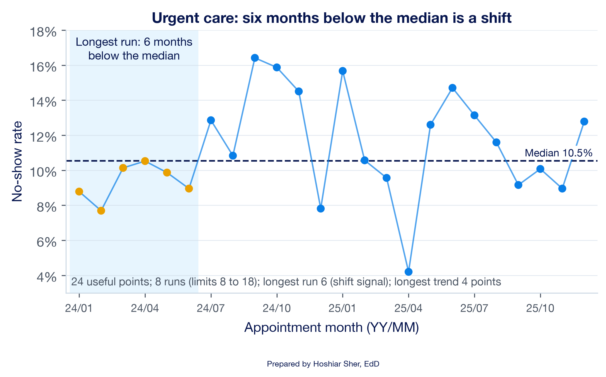
This answers the second claim, and the result differs from the manager’s interpretation. Urgent care is below target, but the rate in the first half of 2024 was lower than it has been since. Being below target does not mean nothing has changed. Two cautions apply to this interpretation:
- The signal is a prompt to ask what changed after June 2024, not proof of a cause. Staffing, scheduling rules, or the patient mix could each contribute, and the data alone cannot determine which.
- The shift is marginal. April 2024 sits only 0.02 percentage points below the median, and urgent care’s monthly counts are small, about 130 appointments, so its rate varies considerably from month to month. Monthly runs at this volume warrant further review before any action is taken. The lowest month, April 2025 at 4.2 percent (5 no-shows in 119 appointments), is also notably low, but it lies inside the range of about 2 to 19 percent that three standard errors around the median allow at that volume, so it is not an astronomical point.
Click the Clear Filter button on the slicer before you move on.
This dashboard is a historical demonstration. Its
formulas read fixed ranges, rows 4 to 27 for 24 months, and its
run-limit table covers 10 to 24 useful points. To keep a dashboard like
it current, each month you would add the new rows to the Table, choose
PivotTable Analyze > Refresh (Data >
Refresh All refreshes every PivotTable at once), fill the
helper formulas down one more row, extend the chart, sparkline, and
MEDIAN ranges to the new last row, add the matching row of
Table 3 from Perla et al. (2011), and point the KPI card at the new
latest month. Many teams also freeze the median at a baseline period,
such as the first 12 or 24 months, so that new data are judged against a
fixed reference rather than a moving one (Provost & Murray,
2022).
Practice on your own
These two builds repeat the walkthrough’s moves on new data, one action at a time. Each step that produces a number states the value you should see. The Answer Key gives the interpretation.
Practice A: is emergency department door-to-provider time changing?
The emergency department (ED) file records, for each visit, the
minutes from arrival to the first contact with a provider in
door_to_provider_minutes (column AI). The
measure is the average door-to-provider time per month:
the sum of the recorded times divided by the number of visits with a
recorded time, January 2024 to December 2025. The 584 visits with no
recorded time are excluded, which Excel’s average does automatically.
You build a run chart of that monthly average and apply the run
rules.
Set up the data.
- Open
datasets/DS3_ed_throughput_clean.csvin Excel. - Choose File > Save As, pick Excel
Workbook (.xlsx), and name it
ch11_ed.xlsx. - Click any cell inside the data, choose Insert > Table, confirm My table has headers, and click OK.
- On the Table Design tab (named
Table on macOS), set the Table Name to
ED. - Click cell
AM1, the first empty column header to the right of the Table, typearrival_month, and press Enter. The Table grows to include the new column. - Click
AM2and enter=TEXT([@arrival_date], "yyyy-mm"). Excel fills the formula down the whole column, as calculated columns did in Chapter 8.AM2shows2025-07. (Ifarrival_dateopened as text rather than a date, use=LEFT([@arrival_date], 7)instead.)
Build the monthly average with a PivotTable.
- With a cell in the Table selected, choose Insert >
PivotTable, select New Worksheet, and click
OK. Rename the new sheet
Calc. - Drag
arrival_monthto Rows. - Drag
door_to_provider_minutesto Values. Click it, choose Value Field Settings, select Average, click Number Format, choose Number with 1 decimal place, and click OK twice. - Check the result. Cells
A4:A27list the 24 months from2024-01to2025-12, and the Grand Total inB28shows43.4. July 2024, inB10, shows45.8, the highest month.
Check the counts behind each average.
- Drag
door_to_provider_minutesto Values a second time. Click it, choose Value Field Settings, and select Count. ColumnCshows how many visits in each month have a recorded time: from615(August 2025) to863(January 2025). Every month rests on several hundred times, so the monthly averages are comparable; the 584 visits with no recorded time are left out of both columns.
Add the median and the run-rule columns.
- In
D3:K3type the headersMonth,Minutes,Median,Side,Last side,Run,Direction, andTrend, one per cell, and make them Bold. - Click
D4and type=A4; clickE4and type=B4. Type the addresses rather than clicking the PivotTable cells. - In
F4enter=MEDIAN($E$4:$E$27). InG4enter=IF(E4>F4, "Above", IF(E4<F4, "Below", "On")). - Select
D4:G4and drag the fill handle down to row 27. FormatE4:F27as Number with 1 decimal place.F4shows43.3, andG4showsBelow, because January 2024 (42.8 minutes) is under the median. - In
H4enter=IF(G4="On", "", G4). InH5enter=IF(G5="On", H4, G5)and fill it down toH27. - In
I4enter=IF(G4="On", 0, 1). InI5enter=IF(G5="On", I4, IF(H5=H4, I4+1, 1))and fill it down toI27. - In
J5enter=IF(E5>E4, "Up", IF(E5<E4, "Down", J4)). - In
K5enter=IF(E5=E4, K4, IF(J5=J4, K4+1, 1)). SelectJ5:K5and fill down to row 27. CellK10shows6: six consecutive rises from January to July 2024.
Apply the run rules.
- In
P3:R18type the same run-limit table as walkthrough step 20. - In
M3typeRun-rule checksand make it Bold. InM4:M10type the same seven labels as walkthrough step 21. - In
N4enter=COUNTIF(G4:G27, "<>On"). It shows24. - In
N5enter=IF(N4=0, 0, SUMPRODUCT((H5:H27<>H4:H26)*(H4:H26<>""))+1). It shows9, within the limits. - In
N6andN7enter the twoXLOOKUPformulas from walkthrough step 24. They show8and18. - In
N8enter=MAX(I4:I27). It shows4, short of a shift. InN9enter=MAX(K5:K27)+1. It shows7, at least 5, so the trend rule fires. - In
N10enter the sameIF(OR(...))formula as walkthrough step 26. It showsSignal: investigate.
Chart and read the result.
- Select
D3:F27and choose Insert > Line > Line with Markers. Title the chartMonthly door-to-provider time with median. - Format the median series with no markers and a dashed line, as in walkthrough step 30. Look for an astronomical point; none of the 24 months stands far apart from the rest.
- In
M13typeChange, Jan to Jul 2024 (min)and inN13enter=E10-E4. It shows2.9once formatted with 1 decimal place. - In
M14typeChange as share of medianand inN14enter=N13/F4, formatted as a percentage with 1 decimal place. It shows6.7%. - Write two sentences for the ED manager: one naming the rule that fired and the months involved, and one judging whether a change of about 3 minutes, or 7 percent, is large enough to act on. Save the workbook.
Practice B: benchmark a county against two peer groups
Analysts for Somerset County, Maine, want to know how the county’s
adult obesity rate compares with that of other counties. The measure is
obesity_pct (column G), the estimated
percentage of adults with obesity in the synthetic county file. The
column stores percentage points, such as 32.3, not Excel
proportions such as 0.323, so type and compare values in
the same form. You apply the Chicot County method from Key concepts to a
new measure and a new region, then choose a chart for each audience.
Set up the data and find the county.
- Open
datasets/PH1_places_county_wide.csv, choose File > Save As, pick Excel Workbook (.xlsx), and name itch11_benchmark.xlsx. - Click any cell inside the data, choose Insert >
Table, confirm My table has headers, and click
OK. Set the Table Name to
Places. - Open the filter arrow on
county_name(columnB), typeSomersetin the search box, and click OK. Four counties named Somerset remain. - Open the filter arrow on
state_abbr(columnC), leave onlyMEchecked, and click OK. One row remains, and itsobesity_pctshows32.3. - Choose Data > Clear to remove both filters, so the histogram you build later includes every county.
Calculate the two comparisons.
- Add a worksheet named
Benchmark. InA1typeSomerset County, ME: Adult Obesity Benchmarkand make it Bold, size 14. - In
A3typeMeasureand inB3typeValue, and make them Bold. - In
A4typeSomerset County, ME (%)and inB4type32.3. - In
A5typeAll countiesand inB5enter=COUNT(Places[obesity_pct]). It shows3143. - In
A6typeNational median (%)and inB6enter=MEDIAN(Places[obesity_pct]). It shows31.3. - In
A7typeShare of all counties belowand inB7enter=COUNTIF(Places[obesity_pct], "<"&B4) / B5. Format it as a percentage with 1 decimal place. It shows55.7%. - In
A8typeNortheast countiesand inB8enter=COUNTIFS(Places[region], "Northeast"). It shows217. - In
A9typeNortheast median (%)and inB9enter=MEDIAN(FILTER(Places[obesity_pct], Places[region]="Northeast")). It shows28.3, so both comparisons now use the same statistic, the median. (FILTERneeds Microsoft 365 or Excel 2021 or later, the versions this book supports.) - In
A10typeShare of Northeast counties belowand inB10enter=COUNTIFS(Places[region], "Northeast", Places[obesity_pct], "<"&B4) / B8. Format it as a percentage with 1 decimal place. It shows76.5%.
Choose and build the chart.
- Use Table 2 to name the question. You are showing where one value sits in the distribution of many values, so the default chart is a histogram.
- Go to the
Placessheet and select theobesity_pctvalues,G2:G3144. - Choose Insert > Insert Statistic Chart > Histogram (on macOS, Insert, then the Statistical chart icon, then Histogram), as in Chapter 9.
- Right-click the horizontal axis, choose Format
Axis, and set Bin width to
1. - Replace the chart title with a sentence that states the finding,
such as
Somerset County, ME, at 32.3%, sits just above the national median. Move the chart to theBenchmarksheet. - Write two sentences: one for a national audience and one for a Northeast audience. Name the peer group behind each sentence and why it suits that audience. Save the workbook.
Use the dashboard you built in the walkthrough to see how a target and a filter change the reading.
- On
Dashboard, clickB6, type17%, and press Enter.B7changes toAt or below target, and the amber fill onB4disappears, because 16.6 percent is now below the target. - Type
14%inB6again and press Enter.B7returns toAbove target, andB4turns amber again. - Click Pulmonology on the slicer.
B4shows8.6%,B5shows15.6%,B7showsAt or below target, andB8turns red withSignal: investigate. - Go to
Calcand record the number of runs inN5, the limits inN6andN7, the longest run inN8, and the longest trend inN9. - Using Table 3, name the rule that fires, and explain in one sentence what the pattern means.
- Suggest one process explanation the clinic could check, and one statistical reason to be cautious.
- Click Clear Filter on the slicer before you close the workbook.
Changing the target changed the status but not the run-rule result. A target judges where a measure is; the run rules judge whether it is changing. The answers are in the Answer Key at the end of the chapter.
Funnel plots for comparing providers of different sizes. A ranked table of clinic rates, sometimes called a league table, invites the conclusion that the top and bottom clinics differ in quality. Small clinics, however, have more variable rates, so by chance they appear at the top and bottom of the ranking more often than large clinics do. A funnel plot plots each unit’s rate against its volume, with control limits that narrow as volume grows (Spiegelhalter, 2005). Figure 22 draws one for the 14 clinics.
Most clinics fall inside the 95 percent limits. Riverbend Behavioral Health (SP03), at 18.5 percent, sits just above the upper 99.8 percent limit, which by Spiegelhalter’s convention is a signal that warrants investigation. It is the network’s only behavioral health clinic, so part of that gap may reflect case mix, the same caution that applies to urgent care.
The two urgent care clinics (UC01 and UC02) fall far below the lower limit, which may reflect differences in case mix and scheduling practices rather than better management. Compared only with one another, around their own rate of 16.4 percent, the six primary care clinics all fall inside their 95 percent limits: their spread from 15.7 to 17.6 percent is what chance produces at their volumes. A funnel plot answers “is this unit’s rate consistent with the network rate at its volume?” It cannot answer whether the units are comparable peers.
![Figure 22: Funnel plot of the no-show rate for 14 clinics against their kept-or-missed appointment volume, January 2024 to December 2025. The center line is the network rate of 16.1 percent; the dashed and solid curves are the 95 and 99.8 percent limits (1.96 and 3.09 standard errors), which narrow as volume grows. SP03 sits just above the upper 99.8 percent limit; UC01 and UC02 fall below the lower limit, which may reflect differences in case mix and scheduling practices. Source: datasets/DS2_appointments_clean.csv, 30,571 appointments.](figures/generated/ch_11_funnel.png)
Control charts in practice also apply run-type rules alongside the limits, so a sustained shift inside the limits is still detected (Provost & Murray, 2022). Mohammed et al. (2008) give a practical tutorial on building p-charts for healthcare data.
The following is an illustrative scenario, not a specific organization. A hospital’s quality dashboard colors each weekly measure red whenever it is worse than the week before. Because weekly numbers move up about half the time by chance, about half of the cells are red each Monday. Managers learn to disregard the red cells. When a genuine problem occurs, a sustained rise in patient falls on one unit, its red cells look no different from those of any other week, and it goes unnoticed for two months.
The remedy is not a more prominent color. The team replaces week-over-week coloring with run charts and one agreed rule set, and colors a cell only when a rule fires. Red now appears a few times a quarter, each time with a chart that shows why. Because the alerts are rare and explained, managers attend to them again. The design choice that restored confidence in the alerts was the same one this chapter teaches: flag signals, not every change.
- Choose a chart from the question and the type of data: bars to compare, lines for time, histograms and box plots for distributions, 100% stacked bars for composition, scatterplots for relationships, and treemaps for hierarchies.
- Readers judge position and length more accurately than angle and area, so start bars at zero, sort by value, label directly, use color with a purpose, and write a title that states the finding.
- A run chart plots a measure in time order around its median; a shift, trend, unusual number of runs, or astronomical point is a signal worth investigating, not proof of a cause.
- A benchmark gives a number meaning, and the choice of peer group can change the conclusion, so state which comparison you use and why.
- A dashboard is a few decision-linked views on one screen, each KPI with a definition, a benchmark, and a rule for when to act.
- Name the default chart for each question, and give the type of data it needs: (a) how ED arrivals are distributed by hour of the day; (b) what share of each specialty’s appointments end in each outcome; (c) whether clinics with longer appointment lead times have higher no-show rates; (d) how appointment volume splits across specialties and, within each, across visit types.
- A colleague’s slide shows the eight specialty shares from Figure 13 as a 3-D pie with a legend and the title “Specialties.” List three changes that would make the chart more accurate and quicker to interpret, and explain each in one sentence.
- A monthly measure takes these 14 values: 21, 23, 22, 20, 24, 25, 26, 27, 28, 26, 27, 25, 22, 21. Calculate the median, count the runs, and find the longest run and the longest trend. Using Table 3, state which rules fire.
- Explain in two or three sentences how a run chart and a control chart differ, and describe a situation in which you would choose each.
- A peer clinic reports a 9 percent no-show rate against your clinic’s 16 percent. Before concluding that the peer performs better, name four checks you would make, drawing on Chapter 2 and this chapter.
- In
ch11_dashboard.xlsx, select OB/GYN (obstetrics and gynecology) on the slicer. Record the latest rate, the median, the target status, and the run-rule result, and write two sentences a clinic manager could act on. - A manager asks you to add a fifth chart to the dashboard. Write the question you would ask before agreeing, and describe one case in which you would decline the request.
Try It (target and Pulmonology). Raising the target
to 17 percent changes B7 to At or below target
and removes the amber fill, but leaves B8 unchanged: a
target judges level, and the run rules judge change. With Pulmonology
selected, N5 shows 19 runs against limits of
8 and 18, N8 a longest run of
3, and N9 a longest trend of 4
points. More than 18 runs is a signal, so the too many
runs rule fires: the rate alternates above and below its median
of 15.6 percent more regularly than chance would produce. One process
explanation to check is a scheduling pattern that alternates month to
month, such as a provider who works only in alternate months. The
statistical caution is that pulmonology is small, 665 kept-or-missed
appointments over 24 months, so its monthly rates vary considerably, and
with eight specialties checked, one signal can be chance. The latest
month, December 2025, shows 8.6%, below the 14 percent
target: a unit can be under target and still show a signal.
Practice A interpretation. The monthly averages run
from 42.1 minutes (August 2025) to 45.8
minutes (July 2024), around a median of 43.3. The run count
(9) and the longest run (4) are within their
limits, but January to July 2024 rise for seven consecutive points, so
the trend rule fires. The rise totals 2.9 minutes, about
6.7% of the median, and the series falls back to
43.0 in August 2024. An effective summary states both
facts: “Door-to-provider time rose every month from January to July
2024, a trend signal, but the rise was under 3 minutes and reversed in
August. It warrants a question to the ED team about what changed in
early 2024 but does not call for an urgent response.”
Practice B interpretation. Nationally, Somerset
County’s 32.3 is just above the median of 31.3
and higher than 55.7% of counties (1,750 of 3,143), so it
sits near the middle. Among the 217 Northeast counties,
whose median is 28.3, it is higher than 76.5%
(166 of 217), in the upper quarter. A histogram is the appropriate chart
because the question is where one value falls in a distribution. For a
national audience: “Somerset County’s adult obesity rate is close to the
national median.” For a Northeast audience: “Among Northeast counties,
Somerset County has one of the higher adult obesity rates, above about
three in four.” The regional comparison fits a Northeast health agency
comparing similar counties; the national one fits a national ranking.
Because the file is synthetic, these values illustrate the method, not
the real county.
Exercises.
- Part a calls for a histogram (or a column chart of the 24 hours), from one numeric measure binned by hour. Part b: a 100% stacked bar, from category shares that sum to 100 percent within each specialty. Part c: a scatterplot, from pairs of numbers, one point per clinic. Part d: a treemap or sunburst, from nested categories with counts.
- Any three of these: remove the 3-D effect, which distorts the near slices; replace the pie with a sorted bar chart, because eight shares are difficult to rank by angle; label the values directly instead of using a legend; and write a title that states the finding, such as “Two-thirds of appointments are primary care.”
- The median is
24.5. The sides are below for the first five points, above for the next seven, and below for the last two, so there are3runs, fewer than the limit of 4 for 14 useful points. The longest run is7points above the median, a shift. The longest trend is6points rising (20, 24, 25, 26, 27, 28). Three of the four rules fire (shift, trend, and too few runs); there is no astronomical point. - A run chart uses the median and the run rules and needs no model of the data, so it suits early improvement work and small datasets. A control chart adds calculated limits around the mean from a model of the data, such as the p-chart for a rate in Chapter 10, so it can judge whether a single point is unusual; it suits monitoring a stable process with steady volumes.
- Check that the definitions match (the denominator and which outcomes count), that the populations and case mix are comparable (an urgent care clinic is not a primary care peer), that the time periods match, and that the gap is larger than chance, using intervals as in Chapter 10. Checking geography and units, from Chapter 2, completes the list.
- With OB/GYN selected, the latest rate is
26.7%against a median of17.5%; the status isAbove target; and the run-rule result isSignal: investigate, because the longest run is 6 and the longest trend is 5 points. An effective summary states the signal and the caution: OB/GYN’s rate shows a sustained pattern that warrants review with the clinic, but it rests on about 23 appointments a month, so a single month such as December 2025 can vary considerably. - Ask what decision the new chart would support and who would act on it. Decline when the chart repeats a view already on the screen, or when no one could name an action it would trigger.
- Anhøj, J., & Olesen, A. V. (2014). Run charts revisited: A simulation study of run chart rules for detection of non-random variation in health care processes. PLOS ONE, 9(11), e113825. https://doi.org/10.1371/journal.pone.0113825
- Benneyan, J. C., Lloyd, R. C., & Plsek, P. E. (2003). Statistical process control as a tool for research and healthcare improvement. Quality and Safety in Health Care, 12(6), 458–464. https://doi.org/10.1136/qhc.12.6.458
- Centers for Disease Control and Prevention. (2025). PLACES: Methodology. https://www.cdc.gov/places/methodology/index.html
- Cleveland, W. S., & McGill, R. (1984). Graphical perception: Theory, experimentation, and application to the development of graphical methods. Journal of the American Statistical Association, 79(387), 531–554. https://doi.org/10.1080/01621459.1984.10478080
- Few, S. (2013). Information dashboard design: Displaying data for at-a-glance monitoring (2nd ed.). Analytics Press.
- Knaflic, C. N. (2015). Storytelling with data: A data visualization guide for business professionals. Wiley.
- Microsoft. (n.d.-a). Create a PivotChart. Microsoft Support. https://support.microsoft.com/en-us/office/create-a-pivotchart-c1b1e057-6990-4c38-b52b-8255538e7b1c
- Microsoft. (n.d.-b). Use conditional formatting to highlight information in Excel. Microsoft Support. https://support.microsoft.com/en-us/office/use-conditional-formatting-to-highlight-information-in-excel-fed60dfa-1d3f-4e13-9ecb-f1951ff89d7f
- Microsoft. (n.d.-c). Use slicers to filter data. Microsoft Support. https://support.microsoft.com/en-us/office/use-slicers-to-filter-data-249f966b-a9d5-4b0f-b31a-12651785d29d
- Microsoft. (n.d.-d). Use sparklines to show data trends. Microsoft Support. https://support.microsoft.com/en-us/excel/get-started/use-sparklines-to-show-data-trends
- Mohammed, M. A., Worthington, P., & Woodall, W. H. (2008). Plotting basic control charts: Tutorial notes for healthcare practitioners. Quality and Safety in Health Care, 17(2), 137–145. https://doi.org/10.1136/qshc.2004.012047
- Okabe, M., & Ito, K. (2008). Color universal design (CUD): How to make figures and presentations that are friendly to colorblind people. https://jfly.uni-koeln.de/color/
- Perla, R. J., Provost, L. P., & Murray, S. K. (2011). The run chart: A simple analytical tool for learning from variation in healthcare processes. BMJ Quality & Safety, 20(1), 46–51. https://doi.org/10.1136/bmjqs.2009.037895
- Provost, L. P., & Murray, S. K. (2022). The health care data guide: Learning from data for improvement (2nd ed.). Jossey-Bass.
- Spiegelhalter, D. J. (2005). Funnel plots for comparing institutional performance. Statistics in Medicine, 24(8), 1185–1202. https://doi.org/10.1002/sim.1970
- Tufte, E. R. (2001). The visual display of quantitative information (2nd ed.). Graphics Press.
- Wilke, C. O. (2019). Fundamentals of data visualization. O’Reilly Media. https://clauswilke.com/dataviz/
- World Wide Web Consortium. (2023). Web content accessibility guidelines (WCAG) 2.2. https://www.w3.org/TR/WCAG22/
- 100% stacked bar chart
- A bar chart in which each bar is divided into segments that sum to 100 percent, showing how a whole splits into parts across groups.
- Astronomical point
- A run-chart point so different from the rest that any reader of the chart would agree it is unusual.
- Benchmark
- A reference point, such as a baseline, a target, or a peer group, used to judge whether a value meets expectations or is changing.
- Case mix
- The kinds of patients and visits a unit serves, which shape its rates and limit comparisons with units that serve different patients.
- Chartjunk
- Decoration in a chart, such as heavy gridlines, shadows, and 3-D effects, that does not encode data and competes with it.
- Control chart
- A time-ordered chart with a center line and calculated limits, usually three standard errors from the center, that mark the range of common-cause variation.
- Dashboard
- A single-screen visual display of the few measures needed to monitor progress toward one or more objectives.
- Data visualization
- The practice of encoding data as visual marks, such as lengths, positions, and colors, so a reader can identify patterns that may be less apparent in a table.
- Data-ink
- The ink in a chart that encodes data, as distinct from decoration.
- Donut chart
- A pie chart with its center removed, often to display the total; like a pie, it encodes shares as angles.
- Funnel plot
- A chart of each unit’s rate against its volume, with control limits that narrow as volume grows, used to compare units of different sizes.
- Key performance indicator (KPI)
- A measure chosen because it tracks progress toward a goal.
- KPI card
- A dashboard element that shows a KPI’s current value beside its benchmark and status.
- Percentile rank
- The share of a comparison group whose values fall below a given value.
- Run
- A sequence of one or more consecutive points on the same side of the median on a run chart.
- Run chart
- A chart of a measure in time order with the median as its center line and no calculated limits.
- Shift
- A run-chart signal of six or more consecutive points all above or all below the median.
- Signal
- A pattern in a measure over time that chance would rarely produce: on a run chart, a nonrandom pattern worth investigating; on a control chart, evidence of special-cause variation.
- Sparkline
- A small line chart drawn inside one worksheet cell to show a trend beside a number.
- Sunburst chart
- A chart of nested categories drawn as rings, with the top level in the inner ring and each segment split outward into its parts.
- Trend
- A run-chart signal of five or more consecutive points all going up or all going down.
- Treemap
- A chart that draws each category as a rectangle with area proportional to its value, often nested to show hierarchy.
- Useful observation
- A run-chart point that does not fall exactly on the median and therefore counts toward runs.
Cite this chapter
@incollection{sher2026ch11,
author = {Sher, Hoshiar J.},
title = {Data Visualization, Dashboards, Benchmarking, and Performance Monitoring},
booktitle = {Introduction to Healthcare Data Analytics Using Excel},
year = {2026},
doi = {10.5281/zenodo.23327956},
url = {https://yar177.github.io/intro-to-HDA-site/ch11.html}
}